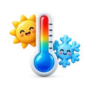
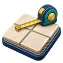
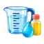

SIMPLIFIQUE SEUS CÁLCULOS
Calculadoras online gratuitas
Use calculadoras online grátis para porcentagem, finanças, obra, medidas, conversões e tarefas do dia a dia. Escolha a ferramenta que precisa e faça seu cálculo em poucos segundos.
Escolha uma calculadora online
Pesquise pelo nome ou pelo que deseja calcular. Todas as ferramentas são gratuitas, funcionam no celular e não exigem cadastro.
Calculadora de
tinta
Calcule litros e latas para pintar paredes, descontando portas e janelas.Conversor de
moedas
Converta valores entre real, dólar, euro e outras moedas usando a cotação disponível.

Conversor de temperatura Converta temperaturas entre Celsius, Fahrenheit e Kelvin em poucos segundos.Calculadora de porcentagem Calcule descontos, aumentos, variações e quanto uma porcentagem representa de um valor.Juros compostos Simule o crescimento de investimentos com valor inicial, juros, prazo e aportes mensais.Calculadora de idade Descubra a idade exata, o signo e quantos dias faltam para o próximo aniversário.Regra de três simples Resolva proporções do cotidiano, como preço por quantidade, receitas e medidas.
Piso e rejunte Estime a quantidade de pisos e rejunte necessária para cômodos e áreas da obra. Calculadora de rodapéCalcule quantos metros e peças de rodapé comprar para cada ambiente. Calculadora de IMCCalcule o índice de massa corporal com base no peso e na altura. Financiamento e empréstimosCompare parcelas e custos de financiamentos pelos sistemas Price e SAC. Calculadora científicaResolva operações matemáticas, potências, raízes e funções científicas. Conversor de comprimentoConverta metros, centímetros, quilômetros, pés, polegadas e milhas. Conversor de pesoConverta quilos, gramas, libras, onças e outras unidades de massa. Conversor de áreaConverta áreas em metros quadrados, hectares, pés quadrados, acres e outras unidades.
Conversor de volumeConverta litros, mililitros, xícaras, galões e outras medidas de volume. Calculadora de combustívelEstime os litros e o custo de combustível para trajetos de ida ou ida e volta. Conversor culinárioConverta xícaras e mililitros em gramas conforme o ingrediente da receita. Calculadora de concretoCalcule o volume de concreto para lajes, calçadas, pilares e estacas. Meta de economiaDescubra quanto guardar por mês para alcançar uma meta financeira no prazo desejado. Conversor de fuso horárioCompare horários entre cidades e fusos para viagens, reuniões e ligações. Diferença entre datasCalcule o intervalo entre duas datas em dias, semanas, meses e dias úteis.Nenhuma ferramenta encontrada. Tente pesquisar com outra palavra.
Feito para ser simples
Use gratuitamente, sem cadastro e direto pelo celular ou computador. Novas ferramentas serão adicionadas aqui ao longo do tempo.